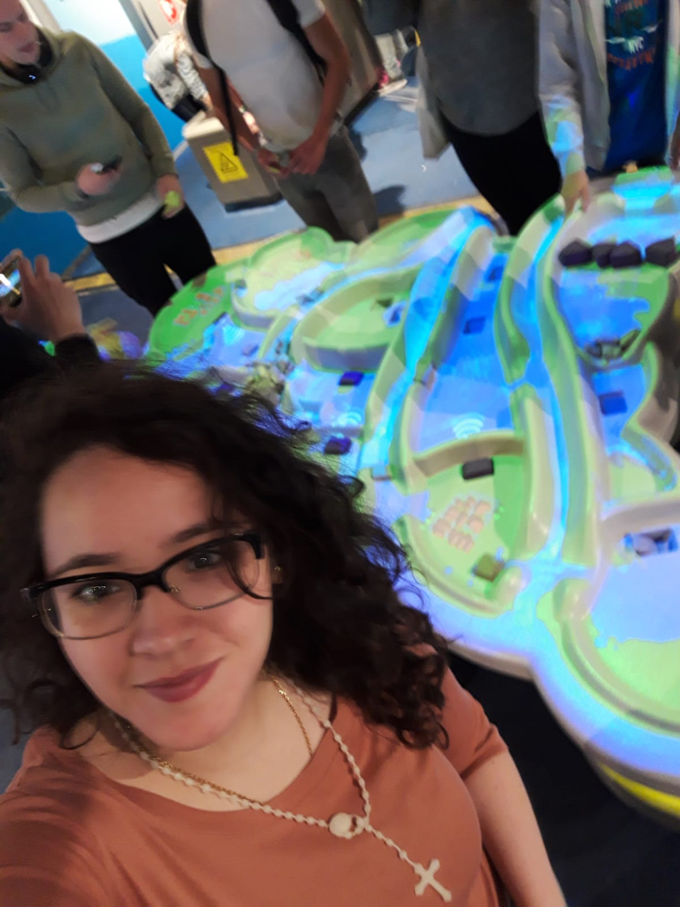

Voor mijn studie ben ik naar het Science Nemo museum gegaan. Dit was mijn eerste keer dat ik er naar toe ging, ik was zeer benieuwd. Toen ik binnenkwam voelde ik mij gelijk weer een kind. Ik vond het fijn dat alles netjes geoordend is qua onderwerpen. Het was leuk om alles rustig te bekijken en het tot je laat komen. Ik vond het al direct jammer dat ik er nooit naar toe ben geweest als kind. Wat bij mij als eerste opviel dat er een lange tijdlijn. Wellicht zal je wel denken, is dat het eerste wat je opvalt. Mijn antwoord is Ja, ik vond hete fijn om een lange tijdlijn te zien, omdat het dan eindelijk een overzicht creëeert in mijn hoofd. Van velen namen en uitvindingen had ik al gehoord, maar toch had ik het niet op die manier in mijn hoofd. Er zijn zijn verschiillende onderdelen die ik erg leuk vond. Zo als in de tweede foto te zien, is er een veld gemaakt, waarbij de kinderen/volwassen interactief mee konden doen. Er was een veld gemaakt, waar water in werd geillustureerd. Fysiek had je zakjes, waar je het water mee kon tegen houden. Dit zou een goede manier zijn, om kinderen dingen bij te leren. Zodat er een visuele ondersteuning is, wat een goed voorbeeld geeft en voordelig is.